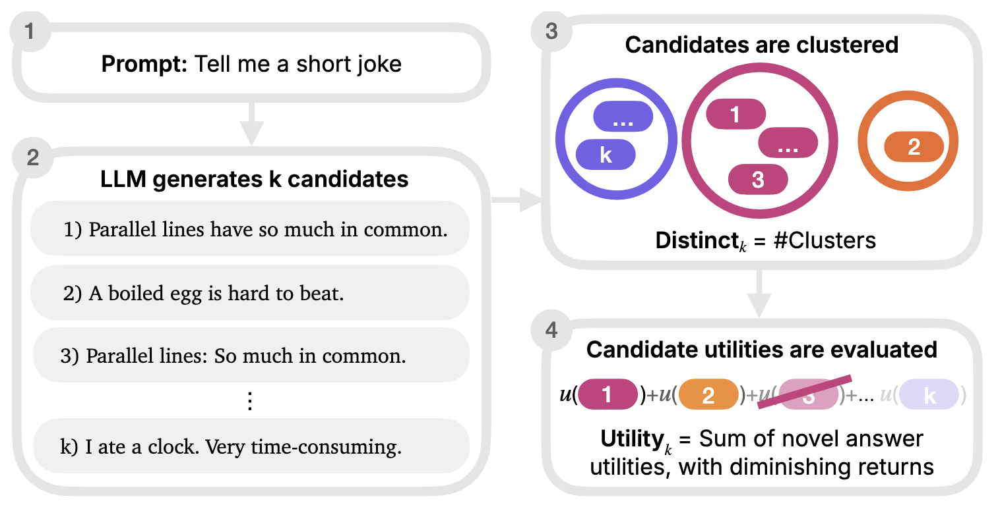

Evaluating Language Models for Humanlike Diversity
Systems are ranked within their own category. A model sampled ten times and a scaffold making many calls per prompt answer the benchmark under different budgets, so one combined ranking would flatter the scaffold.
Both metrics have been computed under two versions of the judges. v1.0 used a similarity classifier that read the first 128 tokens of a response, and a reward model. v1.1 uses language-model judges. Pick which version orders the table; every row shows both.
| # | System | Open | distinct10 | utility10 |
|---|
NoveltyBench is a benchmark designed to evaluate language models' ability to generate simultaneously distinct and high-quality outputs. We set out to evaluate language models not only by what they can generate, but also by what they cannot generate. Specifically, unlike conventional benchmarks that assess only the quality of a single "best" generation, we measure both diversity and quality over the output distribution.

It is well-known that today's language models suffer from mode collapse, the inability to produce a variety of outputs even when diversity is expected. Ask Claude or GPT-4 for vacation recommendations multiple times, and you'll often get variations of the same few destinations, unlike asking different humans who would suggest a wide range of options.
This lack of diversity matters because different users have different needs and preferences. A single "best" answer rarely exists for subjective tasks like recommending books, suggesting creative solutions to puzzles, or generating stories with unique twists. When models consistently produce similar outputs, they can't effectively serve the full spectrum of human preferences and may reinforce existing biases by suggesting certain answers are universally "correct."
Notably, the majority of existing evaluation benchmarks are "mode-seeking", which evaluate models based on their ability to generate exactly one correct or high-quality response. This creates misaligned incentives for model developers, who focus on improving the quality of the single most likely output rather than ensuring diversity across possible responses.
NoveltyBench consists of 1,100 prompts designed to elicit diverse responses, including NB-Curated (100 manually crafted prompts that span four categories: randomness, factual knowledge, creative writing, and subjectivity) and NB-WildChat (1,000 prompts collected from real user interactions with ChatGPT). We introduce two metrics to address the limitations of traditional diversity measures:
Our evaluation of 20 leading language models reveals four key findings: